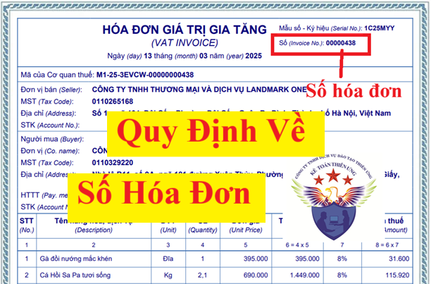

Quy định về "Số hóa đơn" trên hóa đơn điện tử mới nhất năm 2025
Vì Nghị định 70/2025/NĐ-CP không sửa đổi quy định về số hóa đơn điện tử và Thông tư 32/2025/TT-BTC cũng không hướng dẫn gì thêm về số hóa đơn điện tử
Nên quy định về số hóa đơn điện tử vẫn thực hiện theo Nghị định 123/2020/NĐ-CP
Cụ thể theo khoản 3 điều 10 của Nghị định 123/2020/NĐ-CP thì:
a) Số hóa đơn là số thứ tự được thể hiện trên hóa đơn khi người bán lập hóa đơn. Số hóa đơn được ghi bằng chữ số Ả-rập có tối đa 8 chữ số, bắt đầu từ số 1 vào ngày 01/01 hoặc ngày bắt đầu sử dụng hóa đơn và kết thúc vào ngày 31/12 hàng năm có tối đa đến số 99 999 999. Hóa đơn được lập theo thứ tự liên tục từ số nhỏ đến số lớn trong cùng một ký hiệu hóa đơn và ký hiệu mẫu số hóa đơn. Riêng đối với hóa đơn do cơ quan thuế đặt in thì số hóa đơn được in sẵn trên hóa đơn và người mua hóa đơn được sử dụng đến hết kể từ khi mua.
Trường hợp tổ chức kinh doanh có nhiều cơ sở bán hàng hoặc nhiều cơ sở được đồng thời cùng sử dụng một loại hóa đơn điện tử có cùng ký hiệu theo phương thức truy xuất ngẫu nhiên từ một hệ thống lập hóa đơn điện tử thì hóa đơn được lập theo thứ tự liên tục từ số nhỏ đến số lớn theo thời điểm người bán ký số, ký điện tử trên hóa đơn.
b) Trường hợp số hóa đơn không được lập theo nguyên tắc nêu trên thì hệ thống lập hóa đơn điện tử phải đảm bảo nguyên tắc tăng theo thời gian, mỗi số hóa đơn đảm bảo chỉ được lập, sử dụng một lần duy nhất và tối đa 8 chữ số.
LƯU Ý:
LƯU Ý:
Hàng năm, Số hóa đơn và Ký hiệu hóa đơn điện tử sẽ được đơn vị cung cấp dịch vụ hóa đơn điện tử cập nhật tự động theo quy định tại Khoản 3, Điều 10 Nghị định 123 và Điểm b Khoản 1 Điều 4 của Thông tư 78 cụ thể như sau:
- Số hóa đơn bắt đầu từ số 1
- Ký hiệu hóa đơn cập nhật năm lập hóa đơn theo năm Dương lịch.
Ví dụ: Năm 2025, Công Ty Diệu Tâm đang sử dụng ký hiệu hóa đơn là 1C25TTU đã phát hành đến số hóa đơn 350
Sang năm 2026:
+ Số hóa đơn bắt đầu lại từ số 1.
+ Ký hiệu hóa đơn sẽ chuyển thành 1C26TTU
Việc cập nhật này không ảnh hưởng đến quá trình sử dụng hóa đơn điện tử của doanh nghiệp.
